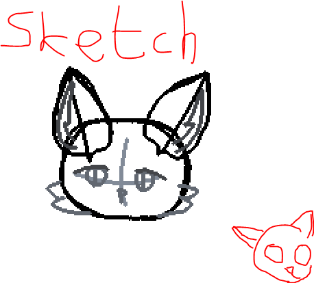

Kiwuar is antropomorphic cat, what is current fursona of Kiwii Delumorin
Profile:Sex: Male
Biological class: Cat
Country where born: Fur
Age: 15
Date of born: 12.02.16M(2007)
Date of created: 02.09.2022
Work: Student of Art School in country Art
Parents:
Mother: Julia
Father: Frank
Currency plan: 2nd plan(~5400S) from 3rd plan(~3800S)
Intrestings: artist,
Traits: Cheerful (mainly to family), Introverty (in crowded places), Creative (in his creatures), Lazy (at home)
Mother of Kiwuar, Julia sometimes cooked for him a spagetti. It's his favourite dish. Kiwuar - "The dish fills my heart tomatoes and flavour of basil..."
His familly wanted to be in the calm places, such as: forests, valleys, etc. Father of Kiwuar, Frank - "I think, what nature is more beautiful, when you don't see a voidness"
He wanted go to Art school because his friend Kevin told, what in country Edu is good art school, but, unfortunatly, the country was captured by Island coalition. After a revenge war with Island coalition and Contin's union, the coalition was broke down and formed a lot of new countries like Art or </>. He remembered, what he wanted to get to Art school, and decided to learn closier to home.
He met Jania, when Kiwuar was in secondary school. She was in local trade school, but sometimes at breaks, she sneak to school, where was Kiwuar for hanging out with her friends. When Kiwuar saw her, he don't paid attention to her, but when Jania saw his, then in his school table was letter by her. Letter - "Hello, dear IDK what's your name. I think, what you are soo sleepy... Can you join to my hanging session? Hide your letter under the school table. - Jania". When he read the letter, Kiwuar decided to join to the session. Kiwuar - "She looks calm and brave to call me to a school lunch".
Gallery:
